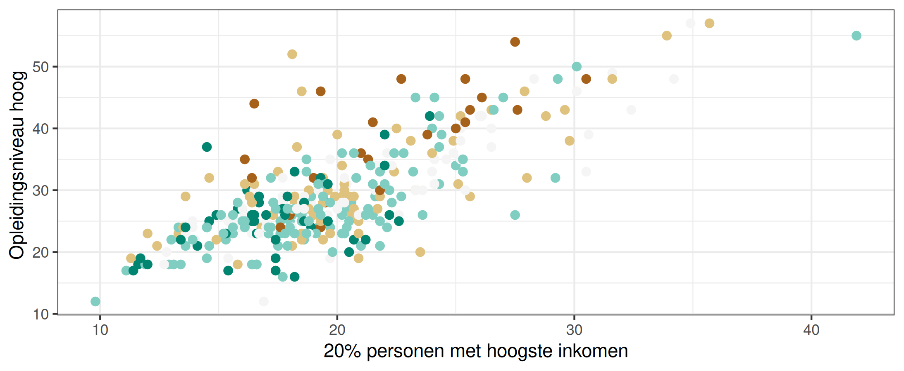

Recall from the comparison that tmap and ggplot are both flexible packages. The ggplot2 layout can be mimicked by tmap and probably the other way round as well.
In this vignette we’ll show how to use ggplot2 inside tmap.
tmap charts
ggplot2 is already used by tmap to draw charts. Via the argument extra.ggplot2 additional ggplot2 code can be provided:
library(ggplot2)
tm_shape(NLD_muni) +
tm_polygons("edu_appl_sci",
fill.legend = tm_legend("University degree"),
fill.chart = tm_chart_bar(extra.ggplot2 = theme(panel.grid.major.y = element_line(colour = "red")))) 
ggplot2 charts
Much more flexibility is achieved when adding a ggplot2 plot via tm_inset(). First, let’s create a violin plot of the distribution of higher education across municipalities, grouped by level of urbanity.
(g1 = ggplot(NLD_muni, aes(x = urbanity, y = edu_appl_sci, fill = urbanity)) +
geom_violin() +
scale_x_discrete(labels = c("++", "+", "o", "-", "--")) +
scale_fill_brewer(guide = "none", type = "div") +
scale_y_continuous("Uni degree") +
theme_bw())
tm_shape(NLD_muni) +
tm_polygons("edu_appl_sci",
fill.legend = tm_legend("University degree")) +
tm_inset(g1, position = c("left", "top"))
In the next example we add a scatter plot and another tmap plot, also added via tm_inset().
Both insets plots will be minimal, so without legend:
(g2 = ggplot(NLD_muni, aes(x = income_high, y = edu_appl_sci, color = urbanity)) +
geom_point(size = 2) +
scale_color_brewer(guide = "none", type = "div") +
theme_bw())
(tm = tm_shape(NLD_muni) +
tm_dots(fill = "urbanity",
fill.scale = tm_scale(values = "brewer.br_bg"),
fill.legend = tm_legend_hide()) +
tm_layout(frame = FALSE))Putting it all together
tm_shape(NLD_muni) +
tm_polygons("edu_appl_sci",
fill.legend = tm_legend("University degree", group_id = "right")) +
tm_inset(g1, group_id = "right", height = 10, width = 10) +
tm_inset(g2, group_id = "right", height = 10, width = 10) +
tm_inset(tm, group_id = "topleft", position = c("left", "top"), box_frame = FALSE) +
tm_components(group_id = "right", position = tm_pos_out("right", "center"))